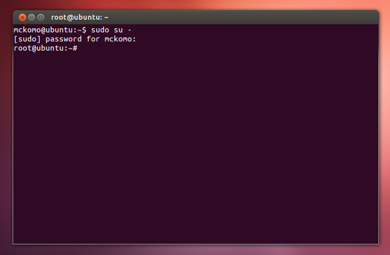
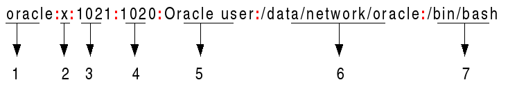

Celem lektury tego poradnika jest przysposobienie umiejętności niezbędnej dla każdego użytkownika systemu operacyjnego typu Unix. Poprzez lekturę oraz wykonanie zestawu praktycznych ćwiczeń, chciałbym Cię, drogi czytelniku, zapoznać z podstawami administracji użytkownikami oraz grupami w systemach Unix.
Zanim jednak rozpoczniesz pracę z tym dokumentem, zapoznaj się z rozdziałem Zanim zaczniesz, w którym dowiesz się, co zrobić przed rozpoczęciem ćwiczeń oraz rozdziałem Kontrola dostępu, który odświeży twoje wiadomości z zakresu kontroli dostępu do zasobów systemu. Tekst zawieram wiele odnośników do sprawdzonych internetowych źródeł – nie wahaj się ich użyć, mogą one znacznie poszerzyć zakres twojej wiedzy. Nie zapomnij również zaglądnąć do działu Dla głodnych wiedzy, gdzie umieściłem link do stron, które warto odwiedzić. Tymczasem zapraszam do lektury!
Zanim zaczniemy, musimy przygotować nasze stanowisko pracy. Pierwszym krokiem będzie instalacja systemu operacyjnego. Wszystkie praktycznie ćwiczenia będą wykonywane pod Ubuntu w wersji 12.04 LTS, jednej z najbardziej popularnych dystrybucji Linux. Istnieją teraz przed tobą dwie możliwości:
Jeżeli, instalacja powiodła się, włącz terminal i upewnij się, że możesz zalogować się jako superuser. W tym celu wykonaj w terminalu następujące polecenie:
$ sudo su -
# teraz wpisz swoje hasłoJeżeli wszystko się powiodło, powinieneś zobaczyć następujący widok:

Jeżeli uzyskałaś podobny efekt, możesz przejść do dalszej części lektury. Na koniec wstępu, krótkie podsumowanie. Aby rozpocząć pracę potrzebujesz:
superusera (możliwość wykonywania komend z sudo);Podczas pracy z systemem z rodziny Unix nie zapominaj o istnieniu komendy man, która wyświetla manual danej komendy. Dla przykładu, chce uzyskać informację na temat komendy usermod. Wpisuje w konsoli:
$ man usermod # aby wyjść z manuala, naciśnij przycisk ‚q’Jeżeli w twoim systemie mają zawitać nowi użytkownicy, musisz wiedzieć jak kontrolować dostęp do istniejących w systemie zasobów. Możesz przecież przechowywać na swoim koncie poufne pliki, których zawartość nie może być odczytana, tym bardziej zmieniona, przez niepowołanych użytkowników. Celem tego rozdziału jest przypomnienie podstawowych informacji z tego zakresu.
W systemach Unix każdy zasób (np. plik lub folder1) posiada trzy klasy dostępu: klasa użytkownika user, klasa grupy group oraz klasa dostępu dla reszty użytkowników systemu others. Podczas tworzenia zasobu, właściwości każdej klasy określa maska umask (user mask). Aby sprawdzić aktualnie ustawioną maskę dla nowych zasobów wpisz w konsoli:
$ umask -STwoim oczom powinien ukazać się podobny komunikat:
u=rwx,g=rwx,o=rxLitery u, g, o symbolizują klasy dostępu, a r, w, x to prawa dostępu. Litera r to prawo do odczytu, w to prawo do zapisu, a x to prawo do wykonania pliku. W tym konkretnym przypadku właściciel pliku będzie mógł odczytać, nadpisać oraz wykonać nowo utworzony plik. Takie same prawa dostępu będą mieli członkowie grupy, do której przynależy plik. Reszta użytkowników będzie mogła tylko odczytać i wykonać plik. Wypróbujmy teraz działanie maski. Stwórzmy nowy plik i zobaczmy jakie ma prawa dostępu.
$ touch test.txt
# ls -lW terminalu wyświetli się lista plików wraz z prawami dostępu. Między innymi pojawi się nasz nowo utworzony plik:
-rw-rw-r-- 1 mckomo mckomo 0 Jan 25 12:52 test.txtJeżeli dalej nie rozumiesz, co oznacza powyższy zapis, przeczytaj ten tekst lub odwiedź Wikipedię. Powinieneś zauważyć, że plik nie ma ustawionych praw do wykonania. Dzieje się tak, ponieważ polecenie touch domyślnie ich nie ustawia. Aby je dodać musimy wspomóc się komendą chmod.
chmod +x test.txtAby potwierdzić, że prawo do wykonania zostało dodane, jeszcze raz użyjmy komendę ls -l.
-rwxrwxr-x 1 mckomo mckomo 0 Jan 25 12:52 test.txtJeżeli jesteś zainteresowany zmianą domyślnej umask, ten poradnik będzie przydatny. Pamiętaj, że prawa dostępu można również ustawiać manualnie poleceniem chmod. Przypuśćmy, że chcemy ograniczyć dostęp do pliku i zostawić prawa dostępu tylko właścicielowi pliku.
chmod 700 test.txtW powyższym przykładzie ustawiliśmy maskę dostępu 7002. Maska dostępu składa się z 3 cyfr z przedziału od 0 do 7. Pierwsza cyfra określa prawa dostępu dla użytkownika, druga dla grupy, a ostania dla reszty. Znacznie każdej cyfry oraz odpowiadające im prawa dostępu zostały przedstawione w poniższej tabeli.
| Octal | Binary | Permission |
|---|---|---|
| 0 | 000 | no permissions |
| 1 | 001 | execute |
| 2 | 010 | write |
| 3 | 011 | write + execute |
| 4 | 100 | read |
| 5 | 101 | read + execute |
| 6 | 110 | read + write |
| 7 | 111 | read + write + execute |
Zobaczmy teraz efekt ostatniej komendy chmod wykorzystując ponownie ls -l.
-rwx------ 1 mckomo mckomo 0 Jan 25 12:52 test.txtJak widać, teraz tylko użytkownik ma pełne prawa dostępu do pliku. Członkowie grupy mckomo oraz pozostali użytkownicy systemu nie mają już żadnych uprawnień.
Dzięki komendzie chown (change owner) możemy również zmienić właściciela pliku oraz jego grupę. Dla ćwiczenia możemy przypisać pliku test.text do grupy oraz użytkownika root.
$ sudo chown root:root test.txt # operacja musi być wykonana z poziomu superusera
$ ls -l
-rwx------ 1 root root 0 Jan 25 12:52 test.txt # wynik operacji chownSpróbujmy teraz dodać tekst Ala ma kota do pliku test.txt.
$ echo „Ala ma kota” > test.txtPonieważ próbujemy nadpisać plik jako użytkownik (w moim przypadku jest to mckomo), który nie jest właścicielem pliku (jest nim aktualnie root), operacja nie powiedzie się. Wyskoczy błąd o braku dostępu do pliku. Zmieńmy maskę dostępu dla klasy others i dajmy jej pełny dostęp do pliku.
sudo chmod o=rwx test.txt # klasa others dostaję dostęp do odczytu, zapisu i wykonania plikuAktualnie plik powinien mieć maskę -rwx—rwx. Spróbujmy jeszcze raz dodać tekst do pliku. Teraz operacja powinna zakończyć się powodzeniem.
$ echo „Ala ma kota” > test.txt # błąd już się nie pojawia
$ cat test.txt # wyświetl zawartość pliku
Ala ma kotaNa koniec, przypiszmy plik ponownie do oryginalnego użytkownika i grupy oraz ustawimy standardowe prawa dostępu 644 (u=rw, g=r, o=r).
chown mckomo:mckomo test.txt
chmod 644 test.txtDzięki zmianie maski dostępu oraz przypisaniu zasobu do właściwego użytkownika oraz grupy można w pełni kontrolować jego dostępność względem innych użytkowników. Jako administrator, który dodaje nowych użytkowników do systemu, powinieneś być w pełni świadomy konsekwencji wykorzystywania komend typu chmod i chown. Jeżeli dalej nie czujesz się pewnie w tym temacie, zatrzymaj się na tym punkcie i w celu poszerzenia wiedzy odwiedź odpowiednie linki z działu Dla głodnych wiedzy.
1 Folder w systemie Unix również jest plikiem.
2 Maska dostępu fizycznie zapisywana jest na 3 bitach. Maska 7 to inaczej 111 w zapisie binarnym.
Jeżeli jesteśmy już merytorycznie przygotowani do rozszerzenia swojego systemu o nowych użytkowników, możemy przejść do meritum sprawy. Zacznijmy od zapoznania się z plikiem /etc/passwd, który zawiera listę wszystkich użytkowników.
$ cat /etc/passwd
mckomo:x:1000:1000:mckomo:/home/mckomo:/bin/bash # ostatnia linia pliku, czyli dane użytkownika utworzonego podczas instalacjiWpisy użytkowników w pliku passwd mają następującą strukturę:

/bin/bash.Nazwę swojego użytkownika można również zobaczyć używając prostej komendy whoami, która wyświetli nazwę twojego użytkownika. Zapamiętaj ją, ponieważ przyda się nam w dalszej części kursu.
$ whoami
mckomo # nazwa użytkownika, podana podczas instalacji systemuProces dodawania nowego użytkownika jest bardzo prosty. Do tego celu wykorzystujemy komendę adduser. Ja utworze swojego imiennika, czyli użytkownika o nazwie maciej.
$ sudo adduser maciej # użytkownika musisz dodać jako superuser
Adding user `maciej' ...
Adding new group `maciej' (1002) … # nowy użytkownik dostanie UID równe 1002
Adding new user `maciej' (1001) with group `maciej' … # dla użytkownika zostanie dodana grupa o tej samej nazwie
Creating home directory `/home/maciej' … # dla użytkownika jest tworzony jego folder domy
Copying files from `/etc/skel' … # folder domowy jest wypełniany kopiami plików z folderu /etc/skel
Enter new UNIX password: # musisz podać hasło dla użytkownika
Retype new UNIX password:
passwd: password updated successfully
Changing the user information for maciej
Enter the new value, or press ENTER for the default # możesz również podać dodatkowe dane użytkownika
Full Name []: Maciej
Room Number []:
Work Phone []:
Home Phone []:
Other []:
Is the information correct? [Y/n] Y # potwierdź wpisane daneZobaczmy jeszcze raz zawartość pliku /etc/passwd.
$ tail -2 /etc/passwd # wyświetl 2 ostatnie linie pliku passwd
mckomo:x:1000:1000:mckomo:/home/mckomo:/bin/bash
maciej:x:1001:1002:Maciej,,,:/home/maciej:/bin/bashWygląda na to, że użytkownik został dodany pomyślnie. Zmienimy teraz użytkownika na nowo utworzonego usera, używając polecenia su) (switch user).
$ su - maciej # flaga ‚-’ sprawi, że przeniesiemy się od razu do folderu domowego użytkownika
$ whoami # sprawdźmy, czy faktycznie użytkownik zmienił się
maciej
$ pwd # sprawdźmy jeszcze, w jakim katalogu się znajdujemy
/home/maciej
$ exit # wyloguj się do podstawowego konta
$ whoami # w moim przypadku będzie to mckomo
mckomoWszystkim nowym użytkownikom, zalecam od razu zmienić hasło dostępu do swojego konta. Za nim jednak to uczynimy, zobaczmy jeszcze zawartość pliku /etc/shadow, gdzie zapisane jest zaszyfrowane hasło dostępu do twojego konta. W tym celu wpiszmy polecenie:
$ sudo tail -1 /etc/shadow # upewni się, że wykonałeś komendę exit po zalogowaniu na profil na nowego użytkownika
maciej:$6$hXey1/1D$fdvsH5nus9ipaWO0Jf4GkC58dTtIrmPqRcM.Ju3fOSJOFyVloIimc8NJ3SCgZhGHYcEJkxqlzQGOIRSidKQkr1:16096:0:99999:7::: # ten długi niezrozumiały ciąg znaków to własnie twoje zaszyfrowane hasłoMożemy teraz jeszcze raz zmienić użytkownika i spróbować zmienić hasło komendą passwd.
$ su - maciej
$ passwd
(current) UNIX password: # musimy wpisać hasło, które podaliśmy podczas tworzenia nowego użytkownika
Enter new UNIX password: # oraz wpisać nowe
Retype new UNIX password:
passwd: password updated successfully
$ exit # wyloguj sięZobaczmy jeszcze raz zawartość pliku shadow.
$ sudo tail -1 /etc/shadow
maciej:$6$vb7qBVUy$hG5vg8aNJYjeMk.zTVg8G5PN1Qt1Du6hBmt0IeCu7QyRM.8lobGUvMFaAyIBsxZgN53swOMDOjhvxrVPgoaf4/:16096:0:99999:7:::Jak widać polecenie passwd zmieniło zawartość pliku shadow.
W wolnej chwili, możesz również zapoznać się z działaniem komendy useradd, które również daje możliwość dodania użytkownika. Jej użycie jest bardziej skomplikowane, lecz daje znacznie większe możliwości.
Jeżeli z jakiś powodów chcemy zmienić nazwę nowo utworzonego użytkownika, możemy użyć komendy usermod.
$ sudo usermod -l maciek maciej # zmieniam nazwę użytkownika z maciej na maciekSzybkie sprawdzenie zawartości /etc/passwd potwierdzi, że osiągnęliśmy zamierzony efekt.
$ tail -l /etc/passwd
maciek:x:1001:1002:Maciej,,,:/home/maciej:/bin/bash # zauważ, że katalog domowy nie został zmienionyW ramach praktyki przywróć poprzednią nazwę użytkownika.
Ręczna zmiana nazwy użytkownika poprzez edycję pliku /etc/passwd skończy się totalną katastrofą. Mimo że, system rozpozna nową nazwę użytkownika, nie pozwoli Ci się ponowne zalogowanie. Dzieje się tak dlatego, że twoje hasło w pliku /etc/shadow dalej jest przypisane do starej nazwy użytkownika (czyli w moim przypadku maciej zamiast maciek).
Używając polecenia usermod możesz dokonać wiele zmian. Wszystkie możliwości tej komendy zostały dokładnie opisane w tym doskonałym poradniku.
Kiedy zajdzie taka potrzeba, powinieneś być również przygotowany na uśniecie użytkownika. Wykorzystując wcześniej zdobyte informację, stwórz użytkownika o nazwie huligan. Czy twój plik /etc/passwd wygląda podobnie?
huligan:x:1003:1004:,,,:/home/huligan:/bin/bashPonieważ użytkownik huligan nie użytkuje zasobów systemu zgodnie z przyjętym regulaminem, podejmujesz decyzję o usunięciu użytkownika. Pomocna okaże się komenda userdel.
userdel -r huligan # użycie flagi -r sprawi, że zostanie usunięty również katalog domy użytkownika
# powinieneś również zapoznać się z innymi flagami komendy userdel
userdel -f # flaga -f (od force) umożliwi usunięcie użytkownik, który aktualnie jest zalogowany
userdel -p # flaga -p sprawi, że wpis o użytkowniku w pliku /etc/passwd nie zostanie usunięty, jednakże użytkownik nie będzie mógł już się zalogować do systemu
userdel -fpr # pamiętaj, że falgi można łączyćWyświetlając jeszcze raz zawartość /etc/passwd zobaczymy, że wpis użytkownika huligan został usunięty. Sprawdź jeszcze listę folderów w katalogu /home, aby upewnić się, że katalog domowy użytkownika huligan również został usunięty.
Jeżeli planujesz udostępniać swój system w sieci (np. poprzez SSH), warto żebyś poznał komendę users, który pokaże Ci wszystkich aktualnie zalogowanych użytkowników.
$ users
mckomo # zalogowany jest tylko użytkownik podstawowy
$ sudo login maciej # zaloguj się (nie jest to równoważne zmienię użytkownika, jak w przypadku komendy su), na utworzonego wcześniej użytkownika
$ users
mckomo maciej # jak widać mamy już 2 użytkowników
$ logout # możemy się już wylogowaćKiedy już wiesz, jak zarządzać użytkownikami, przyswojenie umiejętności zarządzanie grupami powinno pójść dużo łątwiej. Sam zobaczysz, że są to procesy bardzo podobne.
Spróbujmy dowiedzieć się do jakich grup należy nasz nowo utworzony użytkownik. Wykorzystamy polecenie groups
$ su - maciej # zmiana użytkownika
$ groups
maciej # jak widać, nasz użytkownik przynależy tylko do jednej grupy
$ groups nazwa_uzytkownika # możemy też sprawdzić grupy innego użytkownikaZanim przejdziemy dalej, poświęćmy chwilę pliku /etc/group, który, jak pewnie się domyślasz, zawiera informację o istniejących w systemie grupach.
$ tail -2 /etc/group # wyświetl 2 ostanie linie pliku group
mckomo:x:1000:
maciej:x:1002:Plik ten posiada bardzo prosta strukturę:
Czas na dodanie nowej grupy. Używając polecenia groupadd dodamy grupę student.
$ groupadd student
$ tail -3 /etc/group # wyświetl 3 ostanie linie pliku group
mckomo:x:1000:
maciej:x:1002:
student:x:1003: # grupa został utworzona i otrzymała GID 1003Mamy już grupę. Możemy teraz dodać do niej wcześniej dodanego użytkownika. Użyjemy znanej Ci już metody usermod.
$ usermod -aG student maciej # dodajmy użytkownika maciej do grupy student
$ tail -1 /etc/group # sprawdźmy, czy coś się zmieniło w pliku group
student:x:1003:maciej # użytkownik został dodany do listy członków grupy student
$ groups maciej # sprawdzmy jeszcze co nam zwróci polecenie groups
maciej : maciej student # operacja zakończona pełnym powodzeniemTeraz, kiedy wiemy jak dodawać grupy, możemy to praktycznie wykorzystać. Przypuśćmy, że chcemy udostępnić plik notatki.txt wszystkim studentom, ale nikomu więcej. Przydatne będzie polecenie chgrp (change group), które zmieni grupę pliku.
$ touch notatki.txt # tworzymy plik z notatkami
$ ls -l notatki.txt # sprawdźmy aktualne prawa dostępu tego pliku
-rw-rw-r-- 1 mckomo mckomo 0 Jan 26 21:37 notatki.txt
$ sudo chgrp student notatki.txt # operacja musi być wykonana jako superuser
$ chown 740 notatki.txt # ustawiamy prawa odczytu dla klasy dostępu group
$ ls -l notatki.txt # sprawdźmy jeszcze raz właściwości pliku
-rwxrw---- 1 mckomo student 0 Jan 26 21:37 notatki.txt # plik ma zmienioną grupę oraz prawa dostępuTeraz plik z notatkami będzie dostępny do odczytu dla wszystkich członków grupy student. Jeżeli chcemy wypisać użytkownika z danej grupy, użyjemy nowej komendy deluser.
$ sudo deluser maciej student
Removing user `maciej' from group `student' ...
Done.
$ groups maciej
maciej : maciej # maciej nie należy już do grupy studentW ramach ćwiczenia, dodaj ponownie nowego użytkownika do grupy student.
Do edycji grupy wykorzystaj polecenie groupmod (czy widzisz już analogie względem komend dla użytkownika?). Ponieważ wszyscy użytkownicy z grupy student, zakończyli już pomyślnie studia i stali się absolwentami (ang. graduate), wypadało by zmienić nazwę grupy na bardziej adekwatną.
$ sudo groupmod -n graduate student # flaga -n sprawi, że nazwa grupy zostanie zmieniona
$ groups maciej # zobaczmy jeszcze szybko grupy nowego użytkownika
maciej : maciej graduate # zmiana nazwy powiodła sięZostało nam jeszcze usuwanie grup. Czy domyślasz się, jak może nazywać się odpowiednia do tego komenda? Tak, masz rację. Służy do tego groupdel. Aby posprzątać po naszych ćwiczeniach, usuniemy niedawno utworzoną grupę graduate.
$ sudo groupdel graduate
$ tail -2 /etc/group # zobaczysz, że wpis grupy graduate został usunięty
mckomo:x:1000:
maciej:x:1002:
$ groups maciej # maciej automatycznie zostanie wypisany z usuniętej grupy
maciej : maciej
$ ls -l notatki.txt # zobaczmy jeszcze co się stało z plikiem, który należał do tej grupy
-rwxr----- 1 mckomo 1003 8 Jan 26 21:43 notatki.txtPlik notatki.txt nie jest już przypisany do żadnej grupy, ponieważ grupa o GID 1003 nie istnieje. Jeżeli dodamy nową grupę z tym właśnie GID, plik automatycznie zostanie dodany do nowo utworzonej grupy.
A więc to już koniec. Mam nadzieję, ze tekst był dla Ciebie ciekawy oraz czegoś się z niego się nauczyłeś. Kończąc lekturę powinieneś przede wszystkim zapamiętać komendy, które są niezbędne do zarządzania użytkownikami oraz grupami. Pozwól, że wymienię je jeszcze raz:
adduser i useradd - komendy służąca do dodawania nowych użytkownikówusermod - pozwoli Ci na modyfikowanie danych użytkownikauserdel - usunie niepożądanego użytkownikagroupadd, groupmod, groupdel - analogiczny zestaw komend dla grupPewnie teraz myślisz, że wiesz już wszystko. Niestety jesteś w ogromnym błędzie. Systemy typu Unix będą miały przed tobą jeszcze wiele zagadek. Ten tekst nie proszą wszystkich zagadnień, które powinieneś znać, jako pełnoprawny administrator systemu. Polecam Ci zapoznać się z linkami z działu Dla głodnych wiedzy, będzie to doskonała kontynuacja twojej edukacji systemów Unix.
chmod pod lupąTreść tego tekstu jest dostępna na Githubie. Jeżeli zauważyłeś jakiś błąd lub chcesz coś dodać, nie wahaj się wnieść własnego wkładu w ten tekst. Przyszli czytelnicy będą Ci wdzięczni :)
Autor tekstu: Maciej Komorowski